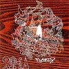
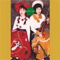
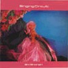
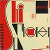
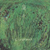
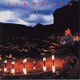
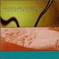
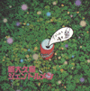
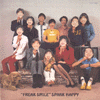
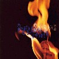

strange music page
japanese strange music * * * Sa - So
- 斎藤ネコカルテット
- さかな
- SAKEROCK
- さねよしいさこ
- The Saboten
- 沢井一恵
- SUNSET Kids
- Secret Book
- SYZYGYS
- SHI-SHONEN
- 篠田昌巳
- シノラマ
- 渋さ知らズ
- 清水一登
- じゃがたら
- シャクシャイン
- JAZICO
- Giulietta Machine
- 新大久保ジェントルメン
- JON & UTSUNOMIA
- skist
- 鈴木さえ子
- スパンクハッピー
- 須山公美子
- 仙波清彦
- 仙波清彦とハニワオールスターズ
- SOH BAND
- SOLA
#ジャケット変えて、よーやく再発されたみたいです。1990年の斎藤ネコカルテットの1枚目。弦楽四重奏バンド。
清水一登さんのWALTZ#4とかはキリングタイムの「収容所(one for each sentiment)」っぽい.....とても
らしい曲。板倉分さんの曲については言うことナシかな？ 近藤達郎さんのリゲインはアレです、昔けっこう流行った
えとうなおこさん(Novo Tono/UBiK2)の「とても短い歌」は古い映画のラストシーンみたいな綺麗な曲、とても気に入りました。
斎藤ネコさんのところから通販できます。作曲者のメンツを見てピンと来る方は是非。(2001.10.25)
- 産業革命
- つつむ
- KARAPE
- EIN KATZENSPRUNG MIT HAIKU
- 麒麟等が歩いている
- GO AHEAD, MY FRIEND
- 手品師の心臓
- WALTZ #4
- KOKIRI
- リゲインNO.1
- とても短い歌
composed by
鈴木さえ子 (1.)
斎藤毅 (2.3.)
山下洋輔 (4.)
鈴木慶一 (5.)
矢野顕子 (6.)
谷山浩子 (7.)
清水一登 (8.)
板倉文 (9.)
近藤達郎 (10.)
江藤直子 (11.)
- 斎藤ネコ (1st violin)
- グレート栄田 (2nd violin)
- 山田雄司 (viola)
- 藤森亮一 (cello)
SAITO NEKO LABEL: NS-0002 (2001)
#ずーっと買おうと思ってたCD。もう言うこと無いです、素晴らしいです。
でもさかなっていつの間にこんな良くなっちゃったんでしょう？昔SSE辺りから出してた頃はほとんど印象に残ってなかったんですけど.....アコースティックギターとボーカルだけのとても澄んだ世界。(2001.5.9)

- 君
- Miss. Mahogany Brown
- Blind Moon
- 知識の機
- 真昼間の見知らぬトーン
- Sky
- Only One Song
- Guys Be Gold
- 19
- 遠くへ
- Johnny Moon
- POCOPEN (vocals)(acoustic guitars on 1.6.8.9.)(bass on 1.9.)(percussions on 5.)
- 西脇一弘 (guitars)(bass on 6.)
MEMORY LAB: MLAL-0001 (2000)
#タワレコで試聴して思わず買いました、1000円。
絶対こいつらイイ奴等だと思います。ジャケット、曲名、1曲目とラス曲のお遊びからは何やらインディーズ臭い何かが溢れ出てるんですけど。
とにかく聴いてて楽しい、YMOの1stのワクワクするよーな感じがたまらないインストです。ポップで人懐っこい感じでも、なんだか相当ヘン。
バンド名はマーティン・デニーの曲から取ったとか。メンバーは20才そこそこの人たちのよう（元Hashikenの上村美保子が一曲歌ってた）
ちょっと久々に新発見した気分、今度ライヴも行ってみようと思います。(2003.4.16)
S A K E R O C K W E B

- INTRO
- 弟義父さん
- チャイニーズスケーター
- モー
- ベラマッチャ
- 裸で駆けてく
- 新巻鮭
- 七七日
- みんなのユタ
- OUTRO
sakerock: SAKE-00001 (2003.3.10)
#さねよしいさ子さんの、6年振りの新譜になります。相変わらずのあの声のあの歌い方なんですけど、以前よりも更になんか伸び伸びとした感じになってます。
メンバー的には、栗コーダーカルテットとか
COMPOSTELAからの流れになっています。なんか以前に比べてとても力強いモノを感じるのは。この人たちのせいですかね？ すごい長い曲なんですけど"鳥のうた"なんかフリーな感じですし。
でも、すごい不思議な感性ですね、この人。なんか子供にしか持てないはずの感覚を残してるような。
それで1曲目から11曲目まで素朴で濃密な曲がずーっと続いた後の、最後の宅録のシンプルな表題曲がサクッと入ってくると、なんかこう....やられちゃいますね。
聴き終わった後、なんか誰かに悪いことをしたような気分になっちゃいました。(1999.7.19)
- THE CHARMING STORY
- 中央高架公園
- ひみつ玉
- アサガオ
- 雨降りのうた
- マンナカ山
- シャボンシャボンシャーリー
- 天使のほほえみ -ALBUM VERSION-
- ジョバンニのミルク
- 鳥のうた
- GLORIA
- スプーン
produced by 栗原正己
- さねよしいさこ (vocals)(keyboards on 12.)
- 鳩野信二 (keyboards,piano)
- 近藤研二 (guitars on 1.3.)(alto recorder on 6.)
- 関島岳郎 (tuba,trumpet,alto recorder)
- 久下恵生 (drums)
- 佐藤公彦 (soprano sax)
- 栗原正己 (programming,crumhorn,loop,bass)
- ダリエ (piano on 4.)
- 川口義之 (soprano recorder on 6.)
- 駒沢裕城 (pedal steel gutiar on 8.9.)
- 宍戸幸司 (guitars on 11.)
MIDI: MDCL-1345 (1999.5.8)
#さねよしいさ子さんの「スプーン」以来の新作。ですけど今回はカバー曲集という事で、↓のような事になってます。
ナタリーワイズ、アンダーカレントの斉藤哲也さんとの共同プロデュースです。なんつーんだろ、淡々としていながらも凛としたところの有るような音かな？バックは静的な感じなんですけど、さねよしさんの凄みみたいなのがしみじみ感じられるよに思います。
特に「手足」のセルフカバーがイイなぁと思います。(2003.12.11)

- 星めぐりの歌
- あの町この町
- Black Is The Colour
- ブランブレン - 昼
- God Is Seen
- 金平糖の踊り
- 手足
- ブランブレン - 夜
- NANA
- Summer Time
- ブランブレン
- さねよしいさ子 (vocals,chorus,口笛)
- 斉藤哲也 (piano,keyboards,programming,percussions)
- 近藤研二 (guitars,ukulele,percussions)
- 徳澤青弦 (cello)
- 神田珠美 (violin)
MIDI: MDCL-1454 (2003.12.10)
- Night Falls on Tokyo
- Kali
- Crack Jack
- Heaven Heath
- Zanov
- Beneath the Climb
- ホッピー神山 (digital president,slide geisha,ass hole box,scum tape from garbage,gram pot)
- SAGUARO (six strings voo doo booster,psychic monitoer with power pc)
- DJ FORCE (turntable,juicy plug,bum head squeezer)
GOD OCEAN/CONSIPIO RECORDS: COGO-0103 (2001.3.23)
- crack pat
- scared straight
- あなたの露になりたい～flamngo
- titicut follies
- red dye
- (Ｙ×Ｄan)HELGA
- bozo
- transcendental Masturbation
- Ｃn+Ｃo=Ｉn+Ｉo
- 沢井一恵 (13絃爭,17絃爭)
- ホッピー神山 (samples,prepared piano)
- 広瀬淳二 (sax,noises)
God Mountain: GMCD-017
#これもけっこう捜してましたが新宿の中古屋さんで買いました。はっきり言ってヘンな音楽です、としか言いようが無いかもさすがにこれは。
メンバー見ても想像つかないような音です、不思議でへんなバンド、どうしてバンドとして存在できたかさえ不思議です。しかも、もう1枚CD有るらしいです。
- まきわり歌
- 砂の女
- たまねぎむかないで
- SHORT HOPE
- 最後の楽園
- 海
- 空・間 (あくま) I
- 空・間 (あくま) II
- あおみどろ
- BATTA
作曲: 大津真
作詞: 伊藤なおみ
編曲: Sunset Kids
- 伊藤ひとみ (vocals)
- 大津真 (guitars,keyboards)
- えとうなおこ (keyboards,vocals)
- 斉藤ネコ (violin,keyboards)
- さいのをまさあき (bass,keyboards)
- れいち (drums,vocals)
- 清水一登 (clarinet)
- 篠田昌巳 (alto sax,bariton sax)
- 村田陽一 (trombone)
- グレート栄田 (violin)
- 山田雄司 (viola)
- 藤森亮一 (cello)
- 峯岸邦江 (chorus)
- 田部井美樹 (chorus)
- 藤本敦夫 (chorus)
POLYDOR/Sunset Kids: SK-89001 (1989)
#普段行かないCD屋さんなんかたまーに行くと妙なモノにぶつかります。「CD捜すぞー」とか気合入れて新宿を徘徊してもロクなモノ見つからないのに。
そんなわけで津田沼のディスクユニオンで見つけたコレはSUNSET Kidsの二枚目、どこまでもsシャレだか本気だかわからない音は最近だと
ONIとかに似てるかも。全編、青筋入るくらい力入った冗談みたいなCD。しかも斎藤ネコさんのサイン付いてました(中古に出すなよ)
なんというか1枚目にも負けないくらい変なCDなんですけど。斎藤ネコさん結構気合入ってます、メンバー見てピンと来る方は捜してみましょう。ちなみに\900でした。(2000.12.17)
- いじわる
- いけないあたし
- まねきねこののろい
- ばったにのった少年
- 踊り人形
- 井戸の中のあいつ
- 猫食い電車
- はんにゃの散歩
- 白衣の天使
- 伊藤ひとみ (vocals)
- 斉藤ネコ (violin,keyboards)
- さいのをまさあき (bass,keyboards)
- れいち (drums,vocals)
- 大津真 (guitars)
- 佐藤靖夫 (guitars)
POLYDOR/Sunset Kids: SK-91002 (1991)
#渋谷HMVにて。小川美潮さんと、宮城純子さんのデュオです。4.7.がスタジオで他はStar Pine's Cafeでのライヴみたいですね。結構カッチリしたジャズですけど、小川美潮さんのまとまった録音物って久しぶり、やっぱ独特の歌い方ですね。
楽器一つ一つ綺麗に鳴っていて良いですね、ちょっと意外だったのがバイオリンが躍動感あって良かったです、ライヴならでわの音。ほんとに予想してたよりずっと良かったです。(2000.2.26)
- 夢が眠る場所
- パンドラの心
- Vase
- SA-GA
- Praise
- 記憶の扉
- 風花
- Ancient Song
- 宮城純子 (keyboards)
- 小川美潮 (vocals)
- 落合徹也 (violin)
- 樋沢達彦 (bass)
- 則竹裕之 (drums)
- 山木秀夫 (drums on 4.7.)
- 櫻井哲夫 (bass on 4.7.)
- 本田俊之 (sax on 4.7.)
Tecnco Label: VRCT-2011 (1999.9.22)
#43tone organとは１オクターブを43分割したオルガン、現代音楽のハリーパーチの理論をもとに作られた...らしいです、このＣＤの内容はポップです、凄く違和感の有るポップスです。
- D.P.O.
THE-"ARAB"-SUITE
- バドルバシム
- A BAO A QU
- Moroccan Rose
- PALLADE
- バドルバシム (refrain)
- SUICIDE ON A FINE DAY
- RIMSKY-TRAIN
- D.P.O. ORIGINAL
- 冷水ひとみ (43tone organ,synthesizers,vocals)
- 西田ひろみ (violin,fretless bass,vocals)
- 今堀恒雄 (guitars on 1.7.8.)
- Hinata Miyuki (cello on 2-6.8.)
CAFE disk: CDCD-001 (1990)
#SYZYGYSの2枚目です。以前HMVかなんかで見かけてたんですけど、その時は買い逃してました。稲田堤のdisk unionで何故か"USED TECHNO"のコーナーに\600で入ってました。
やっぱりちょっと聴くとフツーなんですけど、だんだんヘンになって行きます。8曲目に大友良英(ex-Ground-Zero)が参加、何故かMADE IN DENMARKになってます。タイトルといい結構謎のCDかも。(1999.4.24)
- 力士
- 負け越しの夜
- 土俵
- 行司
- 回し
- 海の曙
- ハマリオハンター
- TURNTABLE SESSION BY N.Y.GUYS
- 西田ひろみ (violin,viola)
- 冷水ひとみ (43microtone-organ)
- Tomita Mitsue (cello on 1.5.)
- Nitta Takashi (bass on 2.4.7.)
- Kobayahi Hidenori (harmonica on 7.)
- 大友良英 (turntables on 8.)
CAFE disc: CDCD-003 (1995)
#TZADIKからリリースされた、1988/12/7での六本木INKSTICKと1983/12/20の渋谷クロコダイルでのライヴ盤です。まさかこの人たちのライヴ盤が出るとは思わなかったなぁぁ・・・John Zornすげぇ。
微分音オルガンとバイオリンと不思議なコーラスのポップな世界、微分音階でポップス作ってキュートに歌ってる人達ってこの人達以外知らないです。。このキミョーなポップ感が大好きだったりします。
最近だと、話題になった山本浩二さんのアニメ作品「頭山」の音楽とかゲームの音楽とかやってるみたいです。(2004.3.15)
（→
SYZYGYS OFFICIAL WEBSITE）

- Niva
- Eyes On Green
- Suicide On A Fine Day
- Fruits of Passion
- Pastoral Cha Cha
- Lotus Rain
- Syzygy Rider
- Ammonite Dream
- D.P.O.
- Such A Face?
- Abyssinian Cat
- Bossa Nova!
- Faunal Grotesque
- Fonce
- 西田ひろみ (violin,keyboards,vocals)
- 冷水ひとみ (43-microtone organ,vocals)
- 今堀恒雄 (guitars)
- 椎名達人 (bass)
TZADIK: TZ-7236 (2001)
#よーやっと再発。テクノ歌謡シリーズ万歳。Shi-Shonenの最初のアルバムです。"ハズカシイ80年代"を体現したよーな感触のアルバムではあるんですけど、今聴いても十分瑞々しいポップスです。特にシングルにもなった"Lovely Singin' Circuit"はすごい良い曲と思います。"テクノ歌謡"のくくりで売られちゃうのはちょっともったいないかも。
ちなみに3,8曲目は渡辺等で、7曲目は福原まりの曲です。アルバム通していろんな要素が詰めこまれてて、その微妙な混ぜ具合もこのバンドの魅力の一つかも。
この後更にポップス路線になった"Do Do Do"を出して、渡辺等さんと友田真吾さんは抜けてしまいます。私には戸田誠司さんのテクノ色が強くなってしまった、次のアルバムよりもこっちの方が好みかも。
とにかく嬉しい再発でした。リアルフィッシュはまだなんだろーか？(2000.6.27)

- Lovely Singin' Circuit
- デジタブル・イン・ベッド
- N-S マグネティック
- Bye-bye Yuppie
- HOLONIC
- 嘆きのシステム
- リップ・ビーズ
- ラジコン童
- 水の写像
- L.S.I.C.
- Lovely Singin' Circuit (single versioin)
- 戸田誠司 (vocals,chorus,guitars,computer,sax)
- 福原まり (vocals,chorus,piano,synthesizers)
- 渡辺等 (vocals,chorus,bass,stringed instruments)
- 友田真吾 (drums,chorus)
- 矢口裕康 (sax)
- 美尾洋乃 (violin,chorus)
- 細野晴臣 (MC-4,bass,chorus)
P-VINE RECORDS: PCD-1336 (original relaese 1985)
#FAIRCHILDの戸田誠司さんと、
REAL FISH,
FISHERMEN TIT TOTの福原まりさんのバンドです。REAL FISHとほとんど編成は一緒なのですが、こっちは基本的にボーカル入りのポップバンドです。戸田誠司さんの色の強いいかにも80年代なテクノポップです、ボーカルで好き嫌いが分かれそうです。結局、一番好きなのは福原まりさんのインスト曲の6曲目だったりします。
この後Shi-Shonenはギターの人とYOUさんを入れて活動してたみたいですけど、結局福原まりさんが抜けて解散しちゃいます。そのあと戸田誠司さんはFAIRCHILD(中学の頃好きだった)でかなり有名な人になっちゃいます。

- KISS KISS KISS
- 映して、鏡
- スタティック・ブギ
- パラソルの下で
- 2001年の恋人たち
- 彼と仔犬と私
- 4月の薬草
- 水晶のピラミッド
- 戸田誠司 (vocals,computer,guitars)
- 福原まり (vocals,keyboards)
- 飯尾芳史 (computer programming)
- 中原信雄 (bass)
- 矢口裕康 (sax)
- 美尾洋乃 (violin)
- Negishi Michiro (chorus)
TEICHIKU/Non STANDARD: 30CH-182 (1986.7.21)
#なんだか突然再発された、Shi-Shonenのミニアルバム"DoDoDo"にシングルの"憧れのヒコーキ時代/オートバイ"と、更に1986年のライヴの音源を2曲足したアルバムです。
やっぱり歌ヘタなんですけど、この頃のテクノとネオアコを足したような感じの音はは最近はナカナカ聴けないですね、もう無かった事にされてるような80年代の音。
ずーっとずーっと廃盤のまんまで今回はじめて音を聞けたんですけど、やっぱこの人達のメロディーのセンスとか好きです、もっと上手なボーカルの人がいたら売れてたんじゃないかなぁ.....2曲目は渡辺等、3曲目は福原まりさんの曲、他は戸田誠司さんです。(2000.2.25)
- 瞳はサンセットグロウ
- 5回目のキス
- 手編みの天使
- タイトロープ
- 憧れのヒコーキ時代 (Live Version)
- BYE-BYE YUPPIE BOY (Live Version)
- オートバイク
- 憧れのヒコーキ時代
- 戸田誠司 (vocals,computer,guitars)
- 福原まり (vocals,piano,synthesizers)
- 渡辺等 (vocals,bass,stringed instruments)
- 友田真吾 (drums)
- 矢口裕康 (sax)
- 美尾洋乃 (backing vocals)
POLYSTAR: PSCR-5851 (2000.3.23)
#きちんと聴いたことの無かった、故・篠田昌巳さんの1st。このアルバムから
COMPOSTELAってグループができたようです。グループとしてのCOMPOSTELAは管楽器×3なのに較べると、音的にはバラエティに富んでますけど、やっぱり篠田昌巳さんでしかない音。
どんな歌詞のある音楽よりも、何かを訴えかけるような力を持った音楽と思います。(2002.12.5)
- オーバーチューン～ニキシのまだ来ない朝 (Over Tune - The Morning Nikishi Dosen't Come Yet)
- しあわせなユダヤ人 (Freylekhe Yidelekh)
- イディッシュ・ブルース (Yiddish Blues)
- 僕の心は君のもの (Dien Ist Mein Ganzes Herz)
- タンゴ・タンゴ (Tango Tango)
- カティンカ (Katinka)
- S-1
- 我方他方 (Aban-Taban)
- 同志はたおれぬ (Unsterbliche Opfer)
- 耕す者への祈り (La Plegaria A Un Labrador)
- うす闇の子供 (Child Of The Dark)
- プリパ (Ppuripha)
- 篠田昌巳 (alto sax,soprano sax,baritone sax)
- 中尾勘二 (trombone,soprano sax)
- 大熊亘 (piano,xylophone,clarinet,chorus)
- 駒沢裕城 (pedal steel guitar,acoustic guitar)
- 北村賢治 (piano,organ,chorus)
- 関島岳郎 (tuba)
- 西村卓也 (bass,chorus)
- 久下恵生 (drums)
- 今井次郎 (vocals)
- 高田光子 (チンドン)
- 高田千代子 (ゴロス)
puff up: puf-1 (1990)
#明大前のモダーンレコードにて、\1,000箱に入っていました。この店はこの日に初めて入ったんですけど、ヤバイです俺好みすぎです、ノイズ/アヴァンギャルド/フリー/アングラ系の宝庫のようなお店です。なんだかSoivet*Franceのカセットとかも売ってたなぁ....あぁ、明大前に引っ越したくなってきた。
それはそうとして先に2枚目を買っていたんですが、シノラマの1枚目です。2枚目もそうですが、静かに想像を喚起する音楽です。とても映像的な音(サントラっぽいという事とはちょっと違う)、音数は少ないのですが何かとてもリアリティを感じる音です。(2000.3.20)

- プロローグ～巨人 (prologue - the giant)
- ピエ・ジュ (pie jesu)
- 影のマント (manteau of a shadow)
- ランタン行列 (a lantern procession)
- 月猫 (a moon cat)
- 夜とみみずく (the night and the owl)
- アンドウオール (en dehors)
- ブリキの奇跡 I, II (a miracle of a tin plate)
- マリー (mary)
- 夢のあと (after the night dream)
- 儀式 (a celemony)
- 山の動く日来たる (the day is coming the mountain moves)
- エピローグ～巨人 (epilogue - the giant part II)
- 石塚俊明 (percussions,drums)
- 坂田さちよ (vocals,clarinet,kazoo)
- 坂本弘道 (cello,saw,三線)
- ロケット・マツ (keyboards on 6.13.)
PSF RECORDS: PSFD-39 (1994)
#とても静かな音楽です。音だけを説明するとマイナー演劇のBGMみたいな感じ(?)ですが、とても力強いものを感じます。音楽にはこういう表現方法も有ると言うことだと思います、ちょっと衝撃的でした。

- 糸紡ぎ
- 図書館員・冬の森
- いまいましい指揮者
- 打楽・ポーのまわりを回る
- 蔦の窓から顔が覗いて
- 嵐が丘
- 死の馬のめぐる夜
- 二度笑うほどおかしくはない
- シリウス・東の道
- 野の鍵
- 冬のノートより
- 思慕
- 坂田さちよ (vocals,clarinet,flute)
- 石塚俊明 (drums,percussions,synthesizers,piano)
- 坂本弘道 (cello,vocals,kalimba,saw)
- ロケット・マツ (keyboards,pianica,piano)
- 灰野敬二 (voice)
PSF RECORDS: PSFD-63 (1995)
#近所の呑み屋にて購入、こんなCD出てること全然知りませんでした。シノラマ名義ですけど石塚俊明さん一人で全て録音されています。音の雰囲気は3人だった頃の音を継承してるんですけど、対話が無くなったと言うか.....なんだか内向的な音になったような感じがします。
えーと石塚さんのサイトは
アピア内のここです。(2001.11.3)

- もう月は見なくなった
- 夜飾る会話もなく
- 0番ホーム
- そして
- 影は
- サヨナラ
- 最終列車N
- 夜だったことすら
- カーニバル
- 路上に
- 追想
- カオスなるカオス
- 万象のスケッチ
- 路
- 片道切符
- 愛しい時間(サトルへ)
- 石塚俊明
- Kaneda Hidenobu (feedback guitar on 16.)
PELMAGE RECORDS: PMF-115
- 亜呆の王
- アタラのちっちゃな翼
- 那達慕
- 大沼ブルース
- 戦士
- イゴーゴーゴー
- 我終干自由了
- サリー
- 不破大輔 (dando-list)
- 加藤崇之 (guitars)
- 勝井祐二 (violin)
- 川下直広 (tenor sax,soprano sax)
- 広瀬淳二 (tenor sax,soprano sax)
- 泉邦宏 (alto sax)
- 北陽一郎 (trumpet)
- 花島直樹 (bass clarinet)
- ヒゴヒロシ (bass)
- 大沼志朗 (drums)
- 宗修司 (drums)
- 反町鬼郎 (voice)
- 乳房知らズ (dance)
- ハル宮沢 (guitars,voice)
- 青朔也 (keyboards)
- 金子いづみ (keyboards)
- 鶴田聖子 (keyboards)
- 日下部安宏 (alto sax)
- 鈴木新 (soprano sax)
- 今野聡 (tenor sax)
- 石川寧 (trumpet)
- 末広修一 (trumpet)
- 大由鬼山 (尺八,笛)
- 片貝大洋 (percussions)
- 吉田みほ (percussions)
- 伊郷俊行 (voice on 8.)
track 1-7. recorded at BUDDY on 1992,12,25
track 8. recorded at BUDDY on 1995,12,22
地底レコード: B-7F (1996)
#渋谷HMVにて。なんだか聴きたくなって。相変わらず凄いメンバーです、こんなメンバーでこんな充実した内容なのに、なんでこんなにマイナーなんでしょうね？
3.7.が新宿PIT-INNでのライヴ、他が江古田BUDDY。どっちとも、すごいエネルギー。ライブ見たいのに、行き損ねてばっかで...絶対見にいってやる。(2000.2.26)
- バルタザール (barthasar)
- アングラーズのテーマ (skirmishing undies)
- サリー (sally)
- すてちき
- 天秤
- スターフィールド (star field)
- バイオレンス・ヒバナ (violence hibana)
- DA DA DA
- 不破大輔 (dando-list,bass)
- 片山広明 (tenor sax)
- 広沢"リマ"哲 (tenor sax)
- 井上雅仁 (tenor sax on 3.7.)
- 広瀬淳二 (tenor sax,soprano sax on 3.7.)
- 太田豊 (alto sax)
- 川口義之 (alto sax on 1.2.4.5.6.8.)
- 吉田隆一 (baritone sax)
- 北陽一郎 (trumpet)
- 中根信博 (trombone)
- 小池寿浩 (trombone on 3.7.)
- タムタム田村 (trombone on 3.7.)
- 花島直樹 (bass clarinet)
- 吉岡みどり (soprano sax)(vocals on 8.)
- 室舘アヤ (flute,voice on 3.7.)
- 佐々木彩子 (voice)
- 反町鬼郎 (voice)
- 渋谷毅 (organ)
- 丸山涼子 (keyboards)
- 勝井祐二 (violin)
- 加藤崇之 (guitars)
- 鈴木一郎 (guitars)
- ヒゴヒロシ (bass on 3.7.)
- 早川岳晴 (bass on 3.7.)
- 大沼志郎 (drums)
- 芳垣安洋 (drums)
- 植村昌弘 (drums on 3.7.)
- 松村"松"孝之 (percussions on 3.7.)
- 青山タカ (percussions on 3.7.)
- 川崎落威 (percussions on 3.7.)
- 小野章 (percussions on 3.7.)
- 中野さやか (dance)
- 和田結美 (dance)
- Sal Vanila (butoh dance)
- 蹄ギガ (butoh dance)
- 菊地七変化 (butoh dance)
- 上田そう (butoh dance)
- 田脇"だんな"総徳 (butoh dance)
- 星野欧州 (butoh dance)
- 松原東洋 (butoh dance)
地底レコード: B-14F (1999)
#「渋さはライブを見るモノだー」とか思っててCDになってるモノはあんまり聴いて来なかったんですよね、実は。
試聴機で「あー出てるー」とか思って、聴いてみたら結局なんかもーたまらん気分になってそのままレジへ。
怒涛って言葉が似合うよなぁーとか思いつつ聴いてます。
今回は「BE COOL」以来のスタジオ録音盤です、Sun Ra Arkestraの3名をゲストに迎えてSun Raの曲なんかもやってますけど、やっぱり渋さは渋さな訳で。

- Images
- Naadam
- Quasar
- パ！
- 悪漢
- Space Is The Place
- In The Image of Images
- 本多工務店のテーマ
- 不破大輔 (dandolist)
- つの犬 (drums on 1.4.5.7.8.)
- 芳垣安洋 (drums,percussions on 2.5.6.)
- 関根真理 (percussions on 1.4.5.6.7.8.)
- 井野信義 (contrabass on 1.4.5.7.8.)
- ヒゴヒロシ (bass on 1.2.4.5.6.7.8.)
- 内橋和久 (guitars on 1.4.5.7.8.)
- 大塚寛之 (guitars on 1.2.5.6.)
- 加藤崇之 (guitars on 1.3.4.5.7.8.)
- 太田恵資 (violin on 1.2.4.5.6.7.8.)
- 勝井祐二 (violin on 1.5.6.7.)
- 中島さち子 (keyboards on 1.2.5.6.)
- 高良久美子 (vibraphone on 1.)
- 小野章 (conga on 5.)
- 鈴木新 (soprano sax on 1.5.6.)
- 泉邦宏 (alto sax on 1.4.5.6.7.8.)
- 小森慶子 (alto sax on 1.2.4.5.6.7.8.)
- 立花秀樹 (alto sax on 1.2.4.5.6.7.8.)
- 片山広明 (tenor sax on 1.2.4.5.6.7.8.)
- 廣澤哲 (tenor sax on 1.5.7.8.)
- 吉田祥一郎 (tenor sax on 1.2.4.5.6.7.8.)
- 川口義之 (baritone sax,harmonica on 1.5.6.)
- 鬼頭哲 (baritone sax on 1.2.5.6.)
- 高岡大祐 (tuba on 1.2.4.5.6.7.8.)
- 北陽一郎 (trumpet on 1.2.4.5.6.7.8.)
- 辰巳光英 (trumpet on 1.2.4.5.6.7.8.)
- 室館あや (flute,vibraphone,vocals on 1.2.4.5.6.7.8.)
- 佐々木彩子 (vocals on 6.)
Wlati Bucheli (pan-flute on 2.4.5.8.)
- Marshall Allen (alto sax on 2.4.5.8.)
- Michael Ray (trumpet on 2.4.5.8.)
- Elson Nascimento (percussions on 2.4.5.8.)
地底レコード: B-22F (2004)
#KILLING TIME/AREPOS等の清水一登さんのソロアルバムです、殆ど清水さんはピアノ主体の演奏ですが、やはり複雑な曲や変拍子など多いです。KILLING TIMEのポップな要素を減らしたような印象も受けます。
"おU"というバンド(
清水、れいち、
今堀、
向島、
渡辺、
矢口博康という編成)でこのアルバムの曲などをやってたりしますが、凄く面白い内容でした。
実は何故か2枚持ってます、このCD。

- epistrophy/variation
- waltz #2
- gymnesia
- woogee
- johnson blues
- contrarily
- OJMTKS
- kokeraotoshi
- ojmtks i
- dark ballad
- dusk
- ojmtks ii
- habanerege
- 清水一登 (piano,keyboards,clarinet)
- れいち (drums on 1.5.8.)(percussion on 3.)(vocals on 8.)
- 今堀恒雄 (guitars on 1.5.8.)(acoustic guitar on 3.)
- 篠田昌巳 (alto sax on 1.4.5.6.8.)(bariton sax on 3.)
- 向島ゆり子 (violin on 1.3.5.8.)(accordion on 5.)(vocals on 8.)
- 村田陽一 (trombone on 1.3.5.6.8.)
- 渡辺等 (bass on 1.5.8.)(bouzouki,mandocello,bandurria,bowed psaltery on 3.)
- 駒沢裕城 (steel guitar on 7-d.)
vivid sound/puff up: puf-3(1990)
#あーもーコレは凄いです、下品で強烈で混沌で。82年でコレって相当インパクトが有ったんじゃないかと思います。
最近の音にはとても感じられないような強靭さと思います、このインパクトは。DRAGON ASH聴いてるばあいじゃなくて。
- でも・デモ・DEMO
- 季節のおわり
- BABY
- タンゴ
- アジテーション
- ヴァギナ・FUCK
- FADE OUT
- クニナマシェ
- 元祖家族百景
- ウォークマンのテーマ
BMG/FUNHOUSE: BVCK-38058 (original release 1982.5)
#これはきっと当時にナマで見てたら好きになってたんだと思います。録音されたモノ聴いててもちょっと伝わるものは少ないのかも。
んでもなんだか今の音楽には無い無謀な力強さみたいなの。
- 少年少女
- みちくさ
- ゴーグル、それをしろ
- 都市生活者の夜
- 江戸アケミ (vocals)
- NABE CHANG (bass,chorus)
- EBBY (guitars,chorus)
- OTO (guitars,chorus,DX7,CP80,TR626)
- TEIYU (drums)
- 八尋知洋 (percussions)
- MEENA MINAMI (chorus)
- YUKARIN (chorus)
- 篠田正巳 (sax)
- Yoshida Tetsuji (trumpet)
- 村田陽一 (trombone)
BMG/FUNHOUSE: BVCK-38060 (original release 1987)
#梅津和時のソロアルバム
キネマでのシャクシャインの戦いでのメンバーによるバンド。全4曲60分濃いいメンバーによる濃いいジャズが詰まっています。
- シャクシャインの戦い
- アブラカタブラ
- シーコ・メンデスの歌
- ナビゲーター・ブーガルー
- 梅津和時 (alto sax,soprano sax)
- 今堀恒雄 (guitars)
- 三好功郎 (guitars)
- 清水一登 (piano,keyboards)
- 水野正敏 (bass)
- 新井田耕造 (drums)
- 八尋知洋 (percussions)
Blues Interactions: PCD-2450 (1992)
#梅津さんのサイトの
うしがえる商店から通販してました。清水一登さんの参加CD調べてて「そーいやコレ買ってねーなぁ」とか思いまして。
発売はNYのKnitting Factoryのレーベルなんですけど、録音は東京のGOKで1996に録音して眠っていたモノらしいです。ちなみにシャクシャインはコレをリリースしてしばらくした1998年4月に解散してます。
1,4,7は梅津曲。1曲目は自分の思う梅津さんのイメージとは違う、とても綺麗な旋律と複雑なリズムの曲。
2,6は清水曲、今でも清水さんのライヴでよくやる「情熱の通り雨」はこのバンドの為の曲だったのかな？。
3は今堀曲、とてもティポグラフィカ。
5,9が三好曲、「Seven Crowns」はこないだ弟に聴かしてもらった、
KIKIバンドの鬼怒無月みたい。
8は水野曲。タイトル笑点っすね、SOH-BANDみたい。
今やってる梅津和時KIKI BANDもイイんですけど、新井田耕造+八尋知洋のリズムの交錯する感じとか、どーしてもこっちの方がかっちょいいなぁなんて思います。ライヴ見に行っておけば良かったな。(2003.2.8)

- Belfast
- Shower of Passion (情熱の通り雨)
- Dark Meat
- Today's Lmbada (今日のランバダ)
- Seven Crowns
- My Septic Tank
- Climb Kitamani
- Laugh Point (笑点)
- So Long Vacation
produced by SHAKUSHAIN
recorded at GOK SOUND 1996.2.15-3.18
recorded,mixed by 近藤祥昭
- 梅津和時 (reeds)(pianica on 9.)
- 今堀恒雄 (guitars)(flat mandolin on 9.)
- 三好功郎 (guitars on 1.6-9,)
- 清水一登 (piano,keyboards)(bass clarinet on 2.)(vocorder on 1.)(toy piano on 7.)(xylophone on 8.)
- 水野正敏 (bass)
- 新井田耕造 (drums)
- 八尋知洋 (percussions)
Knitting Factory Works: KFW-215 (1997)
#楽器編成見ればわかるように、とてもエスニック色が強いバンドです。エスニック色強いんですが聴いて見るとマハビシュヌオーケストラみたいな。
他に似ている日本でバンドを探すとするとAUSIAあたりと思います(メンバー一部かぶってますけど)
- Jazico zico zoc Jazico zico
- ALEXANDRIA
- The Theme From JAZICO
- Racuda Barracuda
- Bristy (Rain)
- 佐渡おけさ
- 500 Miles
- Cancion del fuego fatuo (狐火の歌) [バレエ音楽「恋は魔術師」より]
- Small Steps
- okigake
- 井上憲二 (sitar,didgeridoo)
- Miyano Hiroki (guitars)
- 太田恵資 (violin)
- Yamada Haruzo (bass,kalimba,didgeridoo,vocals)
- 吉見征樹 (tabla,percussions)
- Nakagawa Hiroshi (Bansri)
- Tomoeda Ryohei (Yang-chin)
- Esoh (percussions)
- Tsutsui Ikuko (Er-fu)
- Overtone Orchestra (tampoula)
Green Energy/field: GECB-2006 (1994)
#江藤直子（
大友良英Blue Band,UBiK(NaO2),
NOVO-TONO）、大津真（
Phew Band,UBiK(NaO2),
SUNSET KIDS）、藤井信雄（DCPRG,その他イロイロ）の3人によるユニット。
えとうなおこ好きとしては、なんか録音してるらしーとか言う話を聞いて以来（UBiKはどーなったんだろうか？とか思いつつも）楽しみにしてたCDです。
割と単調な感じのリズムのループに、ピアノとかギターとか電子音が微妙に絶妙に乗っかるような感じ。まぁエレクトロニカとか言ってもイイよーな内容では有るんですけど、最近の達とはやっぱり全然感覚が違うよーに思います。（やっぱりUBiKっぽいんだけど、UBiKって聴いたことある人少なそう・・・）
なんつーか抑制されたよーな感じの中にも、ちょっと毒が混じってるみたい。ハマルわ。(2003.6.22)
Giulietta Machine Official Site
- Mingo
- Afo
- Fah
- Nemo
- Chuva
- Pi-Pi
- Axel
- Coco
- Tudo
- 江藤直子 (keyboards,voice)
- 大津真 (guitars,programming)
- 藤井信雄 (drums,percussion)
ewe/BODY ELECTRIC RECORDS: EWBE-0008 (2003.6.21)
#この人たち....ま、いいや。謎の大型新人覆面バンドです、謎の。
もっとジャズ色が強いのかと思ってたんですけどねー、太田...いやアブドゥール・ワハハさんとかがかなり違う雰囲気なのかも知れないですね。
それにしても清水...いや、イゴールはロケンローラーですね、カッチョイイですシビレますオトコですね。(1999.9.5)

- イゴールの嘆き
- オタのトルコ
- 地底人と最低人
- 40代のロッカー
- イゴールのつぶやき
- Fat Back Burner
- Boogie Man Song
- But Then, We Love It.
- イゴールのつぶやき、再び
- グリグリ
- AYAM
- Let's Make Love.
- イゴールの踊り
- イゴールの喜び
- グレート金時 (sax,vocals)
- アブドゥール・ワハハ (violin,vocals)
- イゴール (keyboards,vocals)
- 丘のモーゼ (bass,vocals)
- BONE (percussions,vocals)
- Gudangラム男 (drums,vocals)
MSI: MSI-10119 (1998)
#渋谷ディスクユニオンB1にて、\1500でした。ホントは別のCD捜しに行ってたんですけど、なんだかバンダナ付きでお買い得かなと思ったので。しかも何故か発売元がペヨトル工房(銀星倶楽部とかWAVEとか夜想とかアングラ雑誌を出してる所)になってます。んで、クレジットだと7曲になってますけど、CD入れると9トラック分表示されます。録音はなんだか客席でDATで録った感じのモノです...なんだか、いーかげんだなぁ...
てなわけで、このCD自体はなんだかヤな感じにいーかげんですけど、演奏の方は良い感じにいーかげんです。メンツがメンツなだけに(覆面だから誰だかわかんないけど、とりあえず)この気合の入った"テキトー"はとても濃い味です。全部で75分、おなかいっぱい、オカワリはいらないです。(2000.4.23)
- 地底人と最低人
- 駅前シャッフル
- 情熱の通り雨フラメンコバージョン
- グレートの涙
- 腰くだけ
- グレート・ルーマニア
- オタのトルコ
- グレート金時 (soprano sax,alto sax,clarinet)
- アブドゥール・ワハハ (electric violin,vocals)
- イゴール (piano,keyboards,vocals)
- OBUCHI君 (percussions,samples,vocals)
- OZAWA君 (drums,percussions,pocket trumpet)
Atelier Peyotl: (1999.11.11)
#言わずと知れた(でもフツーの人は知らない)
After Dinnerの"キチガイ音響科学者"宇都宮泰と、言わずと知れた(だから知らないって)"歌う犬"JONのプロジェクト。
このCDだけはいまだに評価不能。確かに聴くときの状態によって聞こえ方が全然違う、寝る前とかにこれをかけて寝ようとしたら、凄い不思議な状態になったりとか、狂音響学者のキチガイ録音。JONにはあまり興味は無いですけど、ひょっとしたらモノスゴイCDなのかも。普段聞いても全然なんですけどね、フツーのCDと同じように扱っちゃダメかも。
- ことりイントロ (the bird)
- 夏はあつい (the dog day)
- やめて下さい (please stop)
- 捨てました (I lost it)
- 暗くなったら (dark side of the day)
- インディアン・ソング (indian song -normal)
- ハイハイハイ (hi hi hi)
- ティリティティ (tirri-ti-ti)
- ジョンの牛 (Jon's cow)
- としとったら (my old days)
- 四つの足 (four legs)
- インディアン・ソング (indian song -fast)
- しっぽ (tail)
- 馬のロディー (Roddy the horse)
- くる！ (come!)
- おさかな (fish)
- お水の中から (from the water)
- ヒゲ (my mustache)
- おチョネリ (Ochoneri the cat)
- おチョナン五円 (5 yen)
all words and music by JON
production and engineering by 宇都宮泰
HOREN: MIMI-004 (1998)
#えーと2000.9.15のW.Horvits/S.Bennet/梅津/内橋のライヴ会場にて、以前からちょーっと気になっていたskistのCD。
skistは渋谷のParcoにて、月イチくらいでやっていたSamm Bennet + いとうはるなのユニットです。これは黄色い方のヤツなんですけど、もう1枚赤いのが出ています。
そのParcoでやってた月イチのヤツは結局見れずに終わってしまったので、どんな事をやっていたのかわからずじまいだったんですけが、このCDは端正なテクノ+電子音って感じです。ポップさはそんなに感じないのですが、ビミョーにユーモラスでちょっとオシャレな感覚ですね。
- chutes
- io
- corrugate
- shift
- ransom
- cross purpose
S-inc record: SINC-0002 (2000)
#鈴木さえ子さんの1stです。ほとんどの曲を鈴木慶一さんとの共作になってます。箱庭的感覚の可愛いポップな音楽です。
- 夜のウイウイ
- I wish it could be Christmas everyday
- 蒸気のたつ町
- ガールスカウト
- 夏の豆博士
- バオバブ人
- ジュラルミンの飛行機
- アメリカのELECTRICITY CO.
- フィラデルフィア
- 朝のマリンバ
- 鈴木さえ子 (drums,piano,guitars,marimba,keyboards,vibraphone,sax,vocals)
- 鈴木慶一 (guitars,percussions,programming,recorder)
BMG VICTOR: BVCR-5019
#2枚目のアルバムです。ゲスト沢山で、ポップで可愛くて幸せな音楽です、
Real Fishの人が結構参加してますね。
#えーと長らく廃盤だったのが再発されました、ストレンジデイズレーベルからの再発です、ストレンジデイズにも載っていた最近のインタビューがライナーに載ってます。
ちなみに福原まりファンとして追記。9曲目は"恋はビーチパラソル"(
天国一の大きなバンド収録)で5曲目もリアルフィッシュの福原さんの曲らしいんですけど....ごめんなさいなんの曲かわからず(テナンと4は持って無い～)
「とりあえず買っておきましょう」って言いたいです、その位好きな一枚。(2000.9.24)
- Island
- 銀のエンゼル
- 鍵とスタンプ
- Hacker ARUIWA 2 Ear Drums
- 魔法の国
- 血を吸うカメラ
- nightmlare
- おかしなおかしなフェリーボート
- 天国への螺旋階段
- 恋する惑星
- 鈴木さえ子 (drums,percussions,keyboards,vibraphone,vocals)
- 鈴木慶一 (guitars,keyboards,backing vocals)
- 清水信之 (guitars on 6.10.)
- 立花ハジメ (guitars on 4.)
- Nara Toshihiro (bass on 4.7.)
- 矢口博康 (sax,clarinet on 1.2.4.5.10.)
- Fujii Takeshi (acoustic guitar on 10.)
- 美尾洋乃 (violin on 1.7.)
- 渡辺等 (cello on 1.7.)
- 中原信雄 (bass on 3.9.)
- 大貫妙子 (backing vocals on 10.)
- 佐伯健三 (backing vocals on 9.)
- EPO (backing vocals on 9.)
- 福原まり (backing vocals on 9.)
- Akagawa Shinichi (whistle on 9.)
BMG VICTOR: BVCR-5020 (1984.6)
BMG/FUN HOUSE: BVCK-37075 (2000.9.20)
#
鈴木さえ子さんのアルバムの中ではベストだと思っています。とてもポップでカラフル、でもちょっとマニアックで、そのバランス感覚が良いです。
- 夏休みが待ち遠しい-mon biclo
- HALLO, SHOO SHOO
- 柔らかな季節
- THE GREEN-EYED MONSTER
- GOOD MORNING
- EXILE
- COME WONDER WITH ME
- イワンの馬鹿
- BNN
- KASPAR'S STATEMENT
- 鈴木さえ子 (drums,piano,synthesizers,marimba,vibraphone,vocals,etc..)
- 鈴木慶一 (guitars,synthesizers,percussions,timpani,bells)
- Fujii Takeshi (synthesizers,programming)
- 白井良明 (guitars)
- 柴又克彦 (guitars)
- 渡辺等 (fretless bass,mandolin)
- Yamazawa Keiko (harp)
- Kazama Fumihiko (accordion)
- Negishi Michirou (harmony voice)
MIDI: MID-1005 (1985)
#XTCのA.Partledgeとかが参加しています。内容はこれまでにも増してポップですが、インスト曲はわりと複雑な作りで面白いです。矢口博康さんがかなり活躍しています。"FREAK IN"と"DEAR WALT"が良いです。
なんかザッパっぽいなー、可愛いザッパって感じ？
- BLOW UP
- YOU'RE MY SPECIAL
- SOMETHING IN THE AIR
- HAPPY FAMILIES
- I WISH IT COULD BE CHRISTMAS EVERYDAY IN U.K.
- TV DINNER
- HAPPY END
- FREAK IN
- STUDIO ROMANTIC
- DEAR WALT
- ADVENTURE IN SOUTH PACIFIC
- 鈴木さえ子
- 渡辺等 (fretless bass on 7.8.9.11.)(cello on 10.)(mandolin on 11.)(ukulele on 1.9.)
- 矢口博康 (saxes on 1.8.9.10.11.)
- Andy Partledge (guitars on 4.5.7.)
- David Rhodes (guitars on 1.)
- 鈴木慶一 (backing vocals on 3.5.6.7.11.)
- 白井良明 (guitar solo on 7.)
- Stuart Gordon (violin,viola on 3.)(violin solo on 6.)
- Richard Thompson (electric guitar on 6.)
- 福原まり (vibraphone on 9.)
- 柴山和彦 (gutiars on 7.8.)(slide guitar on 9.)
- Glen Tommey (bass on 2.)
- Nara Toshihiro (bass on 6.)
- Ono Masashi (percussions on 9.)
- Ishitsubo Shinya (drums on 8.9.)
MIDI: 35MD-1030 (1987)
#いとうせいこう原作、市川準監督の"NO LIFE KING"という映画のサントラ。普通のアルバムと違って実験音楽...ミニマル/アンビエント的なアルバムです、でも鈴木さえ子さんらしい暖かみのある優しい旋律が気持ち良いです。結構気に入ってます。
- LIFE KING
- S-8 to T-8
- A RIPPLE
- FAT'S
- LIFE KING -vision1-
- [OTOKO ONNA SEI SHI MUGENDAI]
- T-8 to S-8
- FEEL OR DEAL
- MOTHER
- HELLO
- FORBIDDNE MODE
- PARTY ATTACK
- A STONE OF WISEMAN
- RESET
- REAL
- 鈴木さえ子
- 渡辺等 (mandolin,ukulele,mando-cello on 9.)(uplight bass on 13.)
- 矢口博康 (sax,bass clarinet on 8.)
- Kanda Masaharu (cello on 13.15.)
- Takayama "RYO" Makoto (speech on 13.)
MIDI: 28MD-1008 (1989)
#ベスト盤です。チキンラーメンの"すぐ美味しい、すごく美味しい"のＣＭ曲が収録されています。
- I wish it could be Christmas everyday
- ガールスカウト
- アメリカのElectricity co.
- フィラデルフィア
- Island
- 銀のエンゼル
- Nightmlare
- おかしなおかしなフェリーボート
- 恋する惑星
- 夏休みが待遠しい
- Good Morning
- 柔らかな季節
- The Green-eyed Monster
- BNN
- Happy End
- You're My Special
- Something in the Air
- I wish it could be Christmas everyday in the U.K.
- '84 日清チキンラーメンＣＭソング (bonus track)
MIDI: MDC8-1115 (1990)
#菊地成孔のポップセンス全開なSPANK HAPPY(名前の元はもちろんSlapp Happyから)の1stシングル。なんかのTVのテーマになってたよう。
アヴァンギャルドでポップでポップな音楽、次作以降どんどん破綻度は高くなっていきます。
- 走り泣く乙女
- 森へ続く道の途中で
- 走り泣く乙女 (instrumental)
- ハラミドリ (vocals)
- 菊地成孔 (sax,chorus)
- 河野伸 (keyboards,programming,chorus)
- 今堀恒雄 (guitars)
- 金子飛鳥strings (strings on 2.)
- Mecken (bass on 2.)
- ASA-CHANG (percussions on 2.)
東芝EMI: TOCP-4001 (1994.8.3)
#SPANK HAPPYでの初のミニアルバム。菊地成孔のポップセンス爆発ですねー、やらしくて、可愛くて、下世話で、さわやかで、色々な要素をごちゃっとまとめて、でもポップスです、濃密なポップスです。現在廃盤、こんなCDを廃盤にしちゃったままで良いんでしょうかね？納得いかないですけど、ほんとに。
- 天上の方の方々
- ウィークエンド
- 走り泣く乙女（バンドタイプ）
- くよくよする日
- オー！神様
- ノールームメイト
- お早う
- ハラミドリ (vocals)
- 菊地成孔 (saxes)
- 河野伸 (keyboards,synthesizers,programming)
- 今堀恒雄 (guitars)
- 外山明 (drums,percussions)
- ASA-CHANG (percussions on 2.6.)
- Mecken (bass on 3.4.)
- 村田陽一 (trombone on 4.5.)
- Araki Toshio (trumpet on 4.5.)
- Sato Kiyoshi (tuba on 4.5.)
- 金子飛鳥strings (strings on 6.)
東芝EMI: TOCT-8534 (1994.9.7.)
#SPANK HAPPYの初のフルアルバム、というかフルアルバムこれだけ。
やっぱり菊地成孔なアルバムです、私は一時期死ぬほど聴いてました、濃密な衝動をポップに整理したような....何言ってんだかわかんないけど。
ちなみにバックも凄いです、TipographicaだったりAlterd StatesだったりGround Zeroだったりと、それでもポップスです。

- I LOVE YOUの逆襲
- 鉄の女と馬
- 破壊
- トラベルロリータ
- 空飛ぶ花嫁
- スパンクスのテーマ
- 私の場合
- ラブクランクイン
- 悲しむ物体
- USSR ?
- 80年代
- さよならとオルガン（とタイコ）
- ハラミドリ (vocals)
- 菊地成孔 (saxes)
- 河野伸 (keyboards,synthesizers)
- 今堀恒雄 (guitars on 1.2.3.6.)
- 大友良英 (tuntable,guitar on 1.)(guitar solo on 9.)(turn table on 10.)
- 植村昌弘 (drums on 1.)
- 外山明 (drums on 3.6.8.12.)
- 三沢いづみ (percussions on 4.8.)(chorus on 8.)
- mecken (bass on 6.)
- 沢田浩史 (bass on 7.)
- 鎌田清 (drums on 7.)
- あらきなおみ (chorus on 8.)
- 内橋和久 (guitars on 9.)
- 那須野満 (bass on 9.)
- 芳垣安洋 (drums on 9.)
- 桑野聖strings (strings on 1.9.)
- 窪田晴男 (guitars on 10.)
- ASA-CHANG (percussions on 10.)
- Chico Godowsky (bass on 10.)
- Karl Muraviyou (drums on 10.)
- Graucho Putiatih (guitars on 10.)
- 中路英明 (trombone on 11.)
- 佐々木史郎 (trumpet on 11.)
東芝EMI: TOCT-8893 (1995.5.10)
#えーと「新生」スパンク・ハッピーの1枚目のマキシ。
音はライヴでも聴いてたけど、ライヴで感じてた80年代テクノ感覚よりも少し最近っぽい音になったような感じかな？といっても最新鋭な音じゃなくって
KRAFTWERK/THE MIXみたいな音なのがミソかも。岩澤さんの声は透き通ってて、フワフワしてて、楽器の一部みたいな感じ。3曲目とかボーカルにモジュレーションかけてるし。
今更昔のスパンクスと較べるのも何ですけど、昔の好きだった人が買ったらどー思うんでしょうね？表面的にはほとんど同名別バンドです。
個人的には頼りなげであんまり感情こもってなさそーな声が、時々やらしく感じられて好きです。(2001.12.9)
- インターナショナル・クライン・ブルー
- ジャンニ・ヴェルサーチ暗殺
- French Kiss
- 岩澤瞳 (vocals)
- 菊地成孔 (vocal,keyboards,CD-J,sax)
- 坪口昌恭 (keyboard,arrangement support on 1.)(tolker on 3.)
- 高井康生 (manipulate on 2.)(guitar on 3.)
- 栗原正己 (bass on 3.)
- 稲葉マオ (manipulate on 3.)
Bellwood Records: BZCM-1006 (2001.11.26)
#SPANK HAPPYのフルアルバムです。なんつーか新しくなってから
初めて見たときに
「本気かよ？」とか思ってましたけど、そのまんま2年もたってそのままアルバム出ちゃいました。
チープな音と圧力低めのリズムトラックに、全く気合とか感じさせないよーな岩澤さんのボーカルが乗っかります。こないだタワレコで聴いてみたファミコンのゲーム音楽のCDにYMOの1枚目を足したよーなトラック。
RIOT IN CHOCOLATE LOGOSは新宿PIT-INNのDATE COURSE SILENT HIP-HOPの時やってた「カカオと私」ですね、CDに入れると思わなかった。あの時の頭悪いファンクみたいなアレンジの方が良かったかな？
自分が好きなのは力抜けてそうな4,5曲目あたりみたい、あと「スパンクハッピーのテーマ」の8曲目。昔のスパンクハッピー好きだった人とかはこのトラック聴いて怒りそうな気もしますけど。(そーゆー人は買わないか)
何かコレ聴いてるとB型の人になったよーな気がします、何もかもがどうでもよさそうな。80年代に青春すごしたっぽい女の人(たぶん菊池成孔さんと同年代)とお茶してる時に
「1999年くらいに世界が終わる予定だったから、2000年以降の事何も考えてなかった。何でハルマゲドン来なかったのかなー？」みたいな事言ってて。なんとなくこのアルバムはそんな雰囲気がします。
詳しい解説とかは
菊地さんのサイトのMITSUMINEに詳しく書いてます。(2002.9.3)

- FRENCH KISS
- フォーエヴァー・モーツアルト
- ジャンニ・ヴェルサーチ暗殺
- EINE SYMPHONIE DES GRAUENS
- SWEETS
- RIOT IN CHOCOLATE LOGOS
- 楽しい知識/LE GAI SAVOIR
- THEME SONG UNDER THE CLOUDY HEAVENS
- 麻酔
- ホー・チ・ミン市のミラー・ボール
arranged by パードン木村(1.10.)
arranged by 堀江博久 (3.)
arranged by Oe Tatsuya(5.6.)
arranged by Izutani Takahiro(4.7.)
- 岩澤瞳 (vocals)
- 菊地成孔 (vocal,keyboards,sax)
- 大友良英 (guitars on 7.)
- Tang Wai Ying (narration Cantonise on 1.7.)
- Izutani Takahiro (programming on 2.4.7.)
- 堀江博久 (programming on 3.)
- Oe Tatsuya (programming on 5.6.)
- Han'Tong-Hyon (narration Korean on 8.)
- Okada Tsuyoshi (narration Germany on 8.)
- 坪口昌恭 (programming on 9.)
- パードン木村 (electronics on 9.)(programming on 1.10.)
KING RECORDS: KICS-965 (2002.9.4)
#「新生」になってから2枚目。もー「新生」なんて書く必要ないかな。
自分の知っていた菊地成孔の書くポップスとはだいぶ違った、ベタベタ80年代の音像がココには有ります。Non STANDARDレーベルっぽいって言うかURBAN DANCEっていうか4-DっていうかEP-4？なんて事を思ったりしてて。菊地成孔さんの青春時代か？
前作にはまだ少し感じられた仄かに旧スパンクスを感じさせるメロディーももう無いです。今聴いてたら
朝まで2chをやってる時のよな気分になってきた。いや別に貶してる訳では無いのですが。
えーと、トラッカーは前作でも参加してたTatsuya Oe(Captain Funk)とパードン木村に加えて、（解散しちゃったけど）シンバルスの矢野博康（今、手が勝手に矢口博康って打った）9曲目のオリビアニュートンジョンのアレンジなんかのセンスは好きかも。(2003.12.10)

- FAME
- chic
- Vendome, la sick KAISEKI
- Les enfants jouent ala russie / 子供達はロシアで遊ぶ
- Le capitalisme est encore valable / 資本主義は未だ有効である
- Un monstre elegant / エレガントの怪物
- vacances noires / バカンス・ノワール48℃
- L.bylon's dead bass lines / 午後4時のティー・パーティー
- PHYSICAL
- De Venus a Antoinette / ヴィーナスからアントワネットまで
- 岩澤瞳 (vocals)
- 菊地成孔 (vocals)(arrangement on 1.4.5.7.9.)(alto sax on 3.7.9.)(tenor sax on 6.10.)
- 矢野博康 (arrangement,programming on 2.6.9.)
- パードン木村 (arrangement,programming on 3.8.)
- Kamibayashi Toshimasa (arrangement on 5.)(programming on 1.5.)
- Tatsuya Oe (arrangement,programming on 7.10.)(guitars on 10.)
- 今堀恒雄 (guitars on 1.4.)
- Okuda Kensuke (guitars on 2.6.)
- Kahimi Karie (narration on 2.10.)
- Richard Counord (narration on 2.10.)
- Gaelle Cloarec (narration on 5.)
- Chigasaki Manabu (bass on 6.)
KING RECORDS: KICS-1051 (2003.12.3)
#タワレコで注文しました。だって売ってないから。聴いて最初に思い起こしたのは谷山浩子かな？
横川理彦さんなんかとよく一緒にやってるみたい、最近はブレヒトなんかを歌ってるとか。コレは1986年の2枚目の初CD化です。デジタルマスタリングがafter dinnerの宇都宮泰。
プロデュースがすきすきスウィッチの佐藤幸雄さんで、80年代のニューウェーブ系っていうか・・・自分の好きなアノ辺の人々がこぞって参加してます。KILLING TIMEとか
COMPOSTELAとか
A-MUSIKとか。
1曲目は斎藤ネコ。4曲目は思いっきり清水一登、8曲目の近藤達郎さんは
ウニタミニマとかのミニマルな感じじゃなくって、
Lovejoyとかみたいな大らかな曲。そーいや10曲目に参加の服部夏樹さんってLovejoyの人と同一人物かな。
どの曲も結構一癖あるよーな感じで、須山公美子さんの唄は子供みたいだっったり、昔の歌謡曲みたいだったり、シャンソンみたいだったりしますけど、不思議と統一感が有ります。長く聴けそう。(2002.5.27)
- 月夜の真空管
- 新しい大陸
- 空中ブランコの唄
- しゃべらないわ
- 船唄
- 花まつり
- 東京一の軽業師
- 星のかけら
- 乙女のワルツ
- マラソンランナー
- すたあまいん
music & lyrics by 須山公美子
produced by 佐藤幸雄
mixed by 藤井暁
digital sound recordings mastered by 宇都宮泰
- 須山公美子 (vocals,accordion,piano)
- 斎藤ネコ (1st violin on 1.8.)
- 栄田嘉彦 (2nd violin on 1.8.)
- 山田雄司 (viola on 1.8.)
- 溝口肇 (cello on 1.8.)
- 篠田昌巳 (sax on 2.7.)
- 中尾勘ニ (bass trombone on 2.)
- 中崎博生 (euphonium on 2.)
- 大熊亘 (vibraphone on 2.)
- 寒河江勇志 (cello,flute on 2.)(bass on 3.4.10.)
- れいち (snare drums on 2.)
- 近藤達郎 (electric percussions on 3.)(claves,footstep on 4.)(piano on 8.)
- 迎久良 (mandolin on 3.)
- 清水一登 (piano on 4.)
- 竹田賢一 (大正琴 on 6.)
- 高田光子 (チンドン on 7.)
- 高田千代子 (drums on 7.)
- 佐藤幸雄 (guitars on 9.)(vibraphone on 11.)
- 小山伸一郎 (wood winds on 10.)
- 伊藤信介 (percussions on 10.)
- 服部夏樹 (tenor sax on 10.)
OPCO: OPCO-0203 (2002, original release 1986 - ZERO RECORDS)
#仙波清彦名義の初のアルバム、邦楽をメインしたわりと静かな印象のアルバム。現在は手に入りにくいかな....でも結構良いです。清水一登作曲の7曲目なんて相当ムチャなことやってます。
個人的には仙波清彦絡みではベストの1枚、板倉さん作曲のさわやかな1曲目とかスゴイ好きです。
#追記:最近再発されてるみたいです、邦楽JAZZのコーナーとかで売ってました。
- 夏河
- 鳥羽殿
- 狸
- 石工
- うすぎぬ
- BUSON
- ふぐ
- 河童
- 温泉
- 春の水
- 雲を呑む
- こだま
composed by
仙波清彦 (on 2.4.6.11.)
板倉文 (on 1.)
久米大作 (on 3.9.)
矢野誠 (on 8.10.12.)
清水一登 (on 7.)
近藤達郎 (on 4.5.)
- 仙波清彦 (drums,percussions,鼓,能管)
- 仙波宏祐 (小鼓)
- 板倉文 (guitars,charango)
- 幸田実 (bass)
- 近藤達郎 (synthesizers,clarinet)
- Ma*To (tabla,percussions)
- 久米大作 (piano,synthesizers)
- 清水一登 (keyboards,clarinet,saxes)
- 矢野誠 (piano)
- 小川美潮 (vocals)
- ヘンリー片岡 (vocals)
- 柴田徹彦 (笛)
- 吉田弘美 (笙)
- 高桑賢治 (篳篥)
- 青山純 (drums,percussions)
- 横沢龍太郎 (drums,percussions)
- 梶原茂実 (drums,percussions)
- 神保彰 (drums,percussions)
- 佐藤一憲 (drums,percussions)
- 則竹裕之 (drums,percussions)
- 田中顕 (drums,percussions)
- れいち (drums,percussions)
- 平ケ倉良枝 (drums,percussions)
- 斎藤ネコ (violin)
- 栄田嘉彦 (violin)
- 山田雄司 (viola)
- 南浩之 (flugelhorn)
- 須山芳博 (flugelhorn)
- 大畑篠亭 (fagotto)
- 宮島基栄 (clarinet)
CBS/SONY RECORDS: 32DH-5073 (1988)
#仙波清彦さんのソロアルバム、ジャケのイメージ通りになんだかヒーリング的なイメージのアルバムになっています。何故か上野洋子さんが全面参加してます、でも歌ってるのはGeeta Deshpandeさんという方ですけど。"Jasmine Talk"ではKILLING TIMEの"日没"や昔のはにわの曲が断片的に使われています。
....なんというか....もうちょっとハジケたアルバムを期待してたんですけどね。そんなにダメとは思いませんけど。
- Breeze and I -OREKAMA Revisited (you Guys Go On Without Me)
- KOI
- Big Fun
- The Chant of Death
- IYE
- Shagiri
- Revelation
- Grinning
- Take Me to Your Leader
- Jasmine Talk
- 仙波清彦 (percussions,drums,toys,bell,shaker,etc...)
- 上野洋子 (synthesizers,arrangement,voices)
- 久米大作 (synthesizrs,piano,arrangement)
- Geeta Deshpande (vocals on 1.2.5.8.)
SONY RECORDS: SRCL-3590 (1996.10.21)
#"はにわオールスターズ"名義のスタジオ盤はこれ1枚なんですけど.....あんまり気に入ってなかったりするんですよね。ライヴの怒涛のテキトーなノリを知ってると、ちっちゃくまとまっちゃているよーな気がして....こんだけのメンバーいるんだからもっと楽しくても良いはずなんですけどね。ちょっと不満。
- ちゃーのみ友達スレスレ
- 日本一のピラルク男
- こぶしの怠り
- うーん、こわいの
- 目下の叫び
- 極楽ルムバ
- 潮風の芸者衆
- 沖のてずるもずる
- ようやく I love you
- めだか
- 仙波清彦 (percussions,drums)
- 青山純 (drums,percussions)
- 寒河江勇志 (bass,violin,cello)
- 横沢龍太郎 (percussions)
- 久米大作 (keyboards,percussions)
- 千野秀一 (keyboards,organ)
- 村上秀一 (drums,percussions)
- 藤本pom (guitars)
- 板倉文 (guitars)
- 川端民生 (bass)
- れいち (vocals,percussions)
- 小川美潮 (vocals)
- 橋本一子 (vocals)
- 田沼宏一郎 (vocals)
- つかもとひろあき (vocals)
- 坂田明 (saxes)
- 中村誠一 (saxes)
SONY RECORDS: SRCL-2133 (1991.8.28)
#参加してる人たちを見れば説明不用だと思いますが、本当にこれだけの人数で演奏してます、物凄いことになってます。一言で説明すると大宴会です。
オレカマとか、この人数だとなんか物凄く気持ちいいです。さらに何て言うか全体を貫き通す
いい加減な感じがたまらないですね。最近はこんな事全然やらないみたいですけど、またバカみたいに人数集めたライヴをやって欲しいです＞仙波清彦様
ちなみにLDもVHSも出てます、コレ。入手困難かもしれないですけど、映像付きのほうが楽しいかも。
- 明るいテレンコ娘
- ウェイトレス
- ホーハイ節
- オレカマ
- リボンの騎士
- シューベルトのセレナーデ
- この胸のときめきを
- 奇妙な果実
- 続・オレカマ
- 体育祭
- ブンガワン・ソロ
- 大迷惑
- 水
- 最後のオレカマ
- あいみん
- 仙波清彦 (conducter,percussions)
- 戸川純 (vocals)
- デーモン小暮 (vocals)
- 小川美潮 (vocals)
- 奥田民生 (vocals)
- 阿部義晴 (vocals)
- 木本通子 (vocals)
- 木津茂理 (vocals)
- 三橋美香子 (vocals)
- 渡辺香津美 (guitars)
- 板倉文 (guitars)
- バカボン鈴木 (bass)
- 渡辺等 (bass)
- 吉田智 (bass)
- 小林靖宏 (accordion)
- 十亀正司 (clarinet)
- 石垣三十郎 (trumpet)
- 松本治 (trombone)
- ボーン助谷 (trombone)
- 坂田明 (sax)
- ダディ柴田 (sax)
- 矢口博康 (sax)
- 金子飛鳥 (violin)
- 斉藤ネコ (violin)
- 久米大作 (keyboards)
- 清水一登 (keyboards)
- 福原徹彦 (笛)
- 福原百華 (笛)
- 藤尾佳子 (三味線)
- 太田幸子 (三味線)
- 杵屋五吉郎 (三味線)
- 田中悠美子 (三味線)
- 内藤洋子 (琴)
- 内藤久子 (琴)
- 望月左之助 (邦打)
- 仙波大明 (邦打)
- 仙波和典 (邦打)
- 仙波宏紅 (邦打)
- 田淵結 (邦打)
- 若林忠宏 (tabla)
- Ma*To (tabla)
- マック清水 (conga)
- 田中倫人 (conga)
- 横沢龍太郎 (percussions)
- Whacho (percussions)
- 田中顕 (percussions)
- 梶原茂実 (percussions)
- 植村昌弘 (percussions)
- 鈴木賢治 (percussions)
- 村上"ponta"秀一 (drums)
- 青山純 (drums)
- れいち (drums)
- 阿部薫 (drums)
SONY RECORDS: SRCL-2132 (1991.8.28)
#えーと
馬鹿テク馬鹿バンドかな？ライヴ音源の2枚目。暴走しっぱなしな感じの音ですけど、ポップな一面も所々でちらつかせます。時々ギャグとしか思えないようなフレーズも挟みつつ。
ドラムの宗修司さんのバンド....なんですけど、宗修司さんは昨年(2001年)死去されています。本当に死んじゃってどーするっていう....
宗さんは死んじゃいましたけど、SOH BANDは現在も活動中です。代わりのドラムは
元テルズシンフォニアの佐藤潤一さん。あとサックスが田中邦和さんに代わってます。詳しくは
オフィシャルページへ。(2002.7.4)

- ブーイング
- セクサロイド "私チャコちゃん"
- LOOSE BOWEL
- Beyond Beyond
- Boys Be Dangerous
- 素敵なお仕置き
- そそりたつ男根
- where is myself?
- 暴れん坊内閣
- 死ネバ馬鹿モ治ル
- 竹内直 (tenor sax,flute,bass clarinet)
- 増田隆一 (guitars)(bass on 7.)
- チェルノブイリ渡部 (synthesizers)(bass on 7.)
- 清水玲 (fretless bass)
- 宗修司 (drums,voice)
地底レコード: B12F (1998)
#
2000.12.6と
2002.9.16に2回来日したLars Hollmerがその時の共演者と作ったスタジオ録音盤。
曲はその時演奏したものがほとんどみたいです。ライヴの時はリハ時間が余り取れなかったからか、結構荒い部分も有ったんですけど、このCDでは緻密なところも聴けます。変拍子多めでプログレ系の曲が多いですけど、メロディーがとても親しみやすくて気持ち良いです。
L.Hollmerのヨーロッパっぽい叙情みたいな感覚の曲に少し日本っぽい感じが乗っかってるのは、大熊ワタルさんのクラリネットの音に負う所が大きいんじゃないかと思います。
個人的にはこの共演者陣が1枚のCDに収まってるのが嬉しいです。プログレ好きな人だけじゃなくて、ワールドミュージック聞くような人が聞いても面白いんじゃないかと思います。(2002.4.26)

- Nationsjazz
- Ljuva Lagen
- Trampumpa
- Arioso Nearaway
- Continue
- Arp. Violin
- Vaxeltango
- Samma Zanzibar
- Parallell Angostura
- AKA session
- Novelty
- Hoppas...GOK...
- Yrsa requem
- Lars Hollmer (accordion,melodica,keyboards,programming,voice)
- 大熊ワタル (clarinet,accordion)
- 坂本弘道 (cello,saw)
- 清水一登 (keyboards,piano)
- 向島ゆり子 (violin,melodica,toypiano)
- 吉田達也 (drums,percussions)
- 伏見蛍 (guitars,mandolin)
INFINITE RECORDS: TUTI-0002 (2002.4.25)